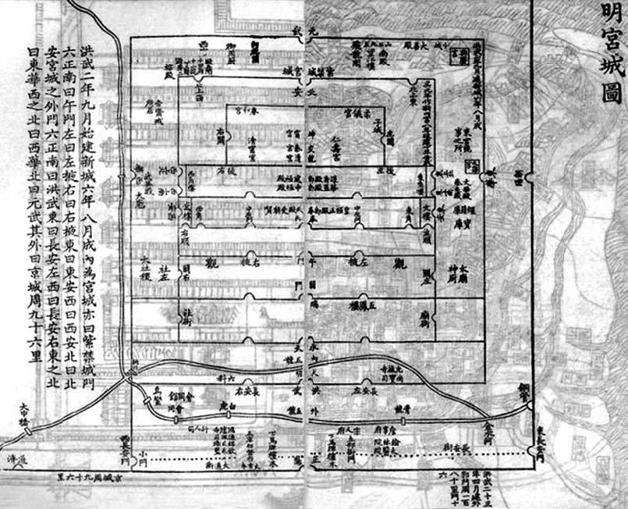

十一
历史常有奇怪的巧合。
1644年6月7日，古历谓之庚寅日。就像彼此约好的，满清摄政王多尔衮在这天进入北京，而远隔千里，明朝福王朱由崧也于当日在南京宣布监国。
洪武南京全貌复原图。
此图是根据正德间陈沂《金陵古今图考》并参酌其他文献记载所制，引人注目的是朱元璋时南京有一道巨大的外郭，周长据说达一百八十里，整个钟山都在其内。明代末年，外郭已不存。

明宫城图。
明代南京和后来北京一样，分外城、内城、宫城三层。“洪武二年九月始建新城，六年八月成。内为紫禁城”。“其外曰京城，周九十六里”。“洪武二十三年四月建外郭一百八十里、门十六。”此为内城（当时称“京城”）至宫城（即紫禁城）示意图。
事实上，当然没有什么约定或沟通，以当时情形，北京、南京两地起码须隔十几日方能了解对方那里发生了什么。然而，他们却不谋而合，共同选择6月7日这一天去做各自最重要的事。何以如此，只有老天知道。也许，真的有什么神秘力量，冥冥中做出这样的巧安排。
《小腆纪年附考》记述多尔衮入城的经过：
（明朝官民）备法驾迎太子于朝阳门，望尘俯伏，及登舆，非太子也，众骇愕间，前驺者麾都人悉去白冠，则我大清摄政王率满洲兵入城矣。城上白标骤遍……[53]
崇祯死后，盛传太子落入李自成之手，并于5月中旬一片石大战前被挟往前线；及李军战败，太子为三桂所救，留在军中[54]。这只是传闻，明太子的真正下落一直悬疑，三百多年来学者穷究备考，仍无定论。不过当时北京城内对太子在吴三桂军中的传闻，好像笃信不疑，而多尔衮决计利用这一点——以及北京对吴三桂实已降清的不知情。他让部队诈称奉太子还朝，骗入朝阳门。瞬间，北京易帜，“城上白标骤遍”。
《国榷》也记道：
清摄政王汤鹅泰（多尔衮当时的译音）入北京。时卤簿出朝阳门，臣民望尘伏道左，止辇升舆，则胡服颀身，臣民相顾失色，关宁兵（指吴三桂军）已先驱入都门。城上俱立白旂。[55]
多尔衮本可耀武扬威，以征服者姿态强势入京，但他却采取了掩人耳目的方式。这固然说明来者并非想象中的那种粗鲁无谋的“蛮夷”，似也让人感到，北京城的未来统治者对明朝的正统地位和权威，心存畏惮。他们颇注意替自己的行为寻找合法性，以便从伦理上成为有说服力的中国权力继承者。从一开始，满清就着眼于此，包括之所以通过与吴三桂联合的方式入关（清兵完全可以随时越过长城，这在崇祯二年十月“乙巳之变”中，皇太极率十万满蒙骑兵突入关内、逼临北京，已一目了然），以及占领北京后礼葬崇祯（虽然并不隆重）、将军事行动首先放在追击李自成上。后来，在多尔衮致史可法的那封著名的信中，这些捞取合法性的努力，都成为满清论证自己更配得上统治中国的依据。
当北京上演明末版“鬼子进村”一幕时，福王朱由崧的监国仪式也在南京举行。较诸清兵狡诈的入城，南京的仪式来得冠冕堂皇、从容不迫。仪式第一个环节，行告天礼，并焚烧祝文。据说，祝文烧出的灰烬扶摇而上，“飘入云霄”[56]，这像是不错的兆头。然后，朱由崧升殿，以监国身份接受群臣的四拜之礼。开国名将徐达之后、魏国公徐弘基跪进监国宝印，群臣再行四拜礼。这样，明王朝正式结束了自4月25日以来四十七天无君的状况。
朝廷正式发布崇祯皇帝的讣告，同时作为监国临政的举措，大赦天下，并决定免除因用兵而向民间征收的“练饷”、停收崇祯十二年（1639）以来“一切杂派并各项钱粮”；上述税费，如有崇祯十四年（1641）之前拖欠未缴者，现在也一笔勾销[57]——当然，这只是顺水人情，其实收不上来。
无论如何，从表面看，朱由崧监国就像以往每位新君即位一样，保持着帝国的一贯风范，有条不紊，程序规整。王朝经历了悲痛，但没有失去秩序，而且以举行监国仪式为标志，似乎正在恢复平静、重新开始。
几天内，陆续做出重要任命：以史可法为东阁大学士兼兵部尚书、高弘图为东阁大学士兼礼部尚书、马士英为东阁大学士兼都察院右都御史、姜曰广为东阁大学士兼礼部左侍郎、王铎为东阁大学士入阁办事、张慎言为吏部尚书、周堪赓为户部尚书。
6月19日，朱由崧正式即皇帝位。这纯粹是个手续问题。十二天前，所以首先以监国名义临政而不直接即皇帝位，是因法定皇位继承人是崇祯太子，现在，在太子没有下落的情况下，朱由崧“因序而立”，但需要以监国的名义过渡一下。
即位诏书宣布，明年改元，新年号是“弘光”。之前，阁臣们拟了两个年号，一为“弘光”，一为“定武”。写下，团作两丸。朱由崧“祝天探丸”，摸到了“弘光”[58]，他就此成为弘光皇帝——换言之，倘摸到另一纸团，历史上留下来的便是“定武皇帝”。据说，对这年号的凶祥，当时就有议论，“弘”字也还罢了，“光”字如何用得？吏部尚书张慎言在得知清朝那边年号为“顺治”后，私下提出一个理论：“光”从火，而“治”从水，“恐水能克火”[59]。对字义或谐音有所讳忌，在中国是很常见的心理。“嘉靖”的年号，就曾被民间联想为“家家皆净”。实际而言，当然并无道理。就算朱由崧“祝天探丸”得到的是“定武”，事情该怎样仍将怎样。一年以后，唐王朱聿键在福州称帝，年号“隆武”，运数也没有变得好起来。
撇开运数不谈，在朱由崧即位的当时，明王朝确有柳暗花明之意。从5月上旬闻悉崇祯死讯算起，短短一个月，顺利解决了新君就位的问题，今后各项事务的展开似乎有了保障。人们从诏书中看到，新君有力地强调着“燕畿扫地以蒙尘，龙驭宾天而上陟，三灵共愤，万姓同仇”，并立下“敢辞薪胆之瘁，誓图俘馘之功”的誓言[60]。考虑到诸多有利条件，就像皇帝承诺的那样，帝国将会翻开“更始”的一页。
崇祯十七年三月十九日以来，北京两易其手，南京也经过一番明争暗斗找到新的主人。此刻，它们就像两大高手，在中国这张巨大棋盘的两端同时各就其位，准备布子行棋、对垒博弈。好戏在即，粉墨已毕，我等只管持壶啜茗、定睛细看便是。
[1] 计六奇《明季南略》，中华书局，2008，第1页。
[2] 谈迁《国榷》，中华书局，2005，第6071页。
[3] 顾炎武《圣安皇帝本纪》，《南明史料（八种）》，江苏古籍出版社，1999，第96页。
[4] 谈迁《国榷》，中华书局，2005，第6073页。
[5] 谈迁《国榷》，中华书局，2005，第6078页。
[6] 计六奇《明季南略》，中华书局，1984，第7页。
[7] 赵士锦《北归记》，《甲申纪事（外三种）》，中华书局，1959，第23—24页。
[8] 计六奇《明季南略》，中华书局，1984，第1页。
[9] 赵士锦《北归记》，《甲申纪事（外三种）》，中华书局，1959，第24页。
[10] 计六奇《明季南略》，中华书局，1984，第1页。
[11] 文秉《甲乙事案》，《南明史料（八种）》，江苏古籍出版社，1999，第430页。
[12] 钱海岳《南明史》第二册，中华书局，2006，第1页。
[13] 计六奇《明季南略》，中华书局，1984，第188页。
[14] 计六奇《明季南略》，中华书局，1984，第1页。
[15] 计六奇《明季南略》，中华书局，1984，第6页。
[16] 计六奇《明季南略》，中华书局，1984，第188页。
[17] 谈迁《国榷》，中华书局，2005，第5889页。
[18] 谈迁《国榷》，中华书局，2005，第5977页。
[19] 文秉《甲乙事案》，《南明史料（八种）》，江苏古籍出版社，1999，第430页。
[20] 钱海岳《南明史》第二册，中华书局，2006，第1页。并见《国榷》第6066页。
[21] 文秉《甲乙事案》，《南明史料（八种）》，江苏古籍出版社，1999，第431页。
[22] 《明史》本纪第二十四庄烈帝二作“慈炯”，他著如《鹿樵纪闻》或作“慈灿”。
[23] 计六奇《明季南略》，中华书局，1984，第6页。《国榷》同，见6077页。
[24] 黄宗羲《原君》，《黄宗羲全集》第一册，浙江古籍出版社，1985，第2页。
[25] 顾炎武《圣安皇帝本纪》，《南明史料（八种）》，江苏古籍出版社，1999，第96页。
[26] 李清《南渡录》，《南明史料（八种）》，江苏古籍出版社，1999，第126页。
[27] 李清《南渡录》，《南明史料（八种）》，江苏古籍出版社，1999，第126页。
[28] 谈迁《国榷》，中华书局，2005，第6076页。
[29] 《明神宗实录》卷二五六，国立北平图书馆红格钞本影印本，1962，第4761页。
[30] 张廷玉等《明史》卷二十一，中华书局，1974，第282页。
[31] 徐鼒《小腆纪年附考》，中华书局，2006，第211页。
[32] 古藏氏史臣（黄宗羲）《弘光实录钞》，《南明史料（八种）》，江苏古籍出版社，1999，第5页。
[33] 李清《南渡录》，《南明史料（八种）》，江苏古籍出版社，1999，第413页。
[34] 李清《南渡录》，《南明史料（八种）》，江苏古籍出版社，1999，第413页。
[35] 温功义《三案始末》，重庆出版社，1984，第106页。
[36] 古藏氏史臣（黄宗羲）《弘光实录钞》，《南明史料（八种）》，江苏古籍出版社，1999，第58页。
[37] 李清《南渡录》，《南明史料（八种）》，江苏古籍出版社，1999，第126页。
[38] 李清《南渡录》，《南明史料（八种）》，江苏古籍出版社，1999，第178页。
[39] 计六奇《明季南略》，中华书局，1984，第6页。《国榷》略同，除“现在惟有福王”作“现在既有福王”，见6077页。
[40] 古藏氏史臣（黄宗羲）《弘光实录钞》，《南明史料（八种）》，江苏古籍出版社，1999，第5—6页。
[41] 计六奇《明季南略》，中华书局，1984，第6页。
[42] 顾炎武《圣安皇帝本纪》，《南明史料（八种）》，江苏古籍出版社，1999，第96页。
[43] 古藏氏史臣（黄宗羲）《弘光实录钞》，《南明史料（八种）》，江苏古籍出版社，1999，第5页。
[44] 计六奇《明季南略》，中华书局，1984，第7页。
[45] 徐鼒《小腆纪年附考》，中华书局，2006，第155页。
[46] 李清《南渡录》，《南明史料（八种）》，江苏古籍出版社，1999，第126页。
[47] 李清《南渡录》，《南明史料（八种）》，江苏古籍出版社，1999，第126页。
[48] “南都诸臣不知也，方列王不孝不弟七款……不知杰等与士英已迎立福王矣。”李清《南渡录》，《南明史料（八种）》，江苏古籍出版社，1999，第126页。
[49] 顾炎武《圣安皇帝本纪》，《南明史料（八种）》，江苏古籍出版社，1999，第96页。
[50] 计六奇《明季南略》，中华书局，1984，第7页。徐鼒《小腆纪年附考》，中华书局，2006，第156页。
[51] 谈迁《国榷》，中华书局，2005，第6081页。
[52] 计六奇《明季南略》，中华书局，1984，第8页。
[53] 徐鼒《小腆纪年附考》，中华书局，2006，第156页。
[54] 徐鼒《小腆纪年附考》，中华书局，2006，第155页。
[55] 谈迁《国榷》，中华书局，2005，第6083页。
[56] 徐鼒《小腆纪年附考》，中华书局，2006，第157页。
[57] 徐鼒《小腆纪年附考》，中华书局，2006，第157页。
[58] 谈迁《国榷》，中华书局，2005，第6099页。
[59] 谈迁《国榷》，中华书局，2005，第6099页。
[60] 李清《南渡录》卷之一，《南明史料（八种），江苏古籍出版社，1999，第136页。